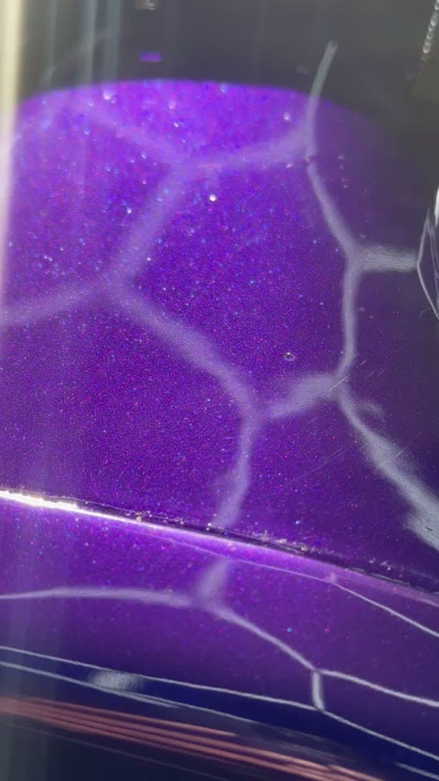

The build log
Every car that comes through the Team Calvin Racing workshop, step by step: custom paint, bodywork, restoration and the hours of flatting and polishing in between. Photos, materials, and the Reels from each build.

In progress
Purple Subaru WRX Engine Bay: Custom Glitter Paint, Wet Sand and Polish
Full custom engine bay on a Subaru WRX: our own one-stage Lamborghini purple with glitter mixed in, lacquered, then de-nibbed, wet flatted with 2000 grit, compounded and polished to a show finish.

In progress
Classic Mini Shell Restoration: Seams On or Seams Off?
Classic Mini shell restoration in the Team Calvin Racing workshop: deciding which double-welded outer seams come off for a smooth shell before paint.